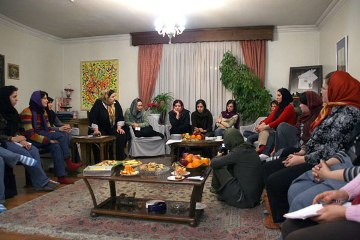
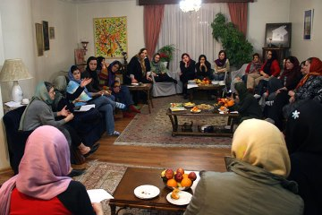

|
|
گرازشی از نشست تعدادی از اعضای کمپین یک میلیون امضا در تهران:
تبادل نظردرباره روش ها و نگرش ها در کمپین
گزارش: آیدا سعادت، عکس: راحله عسگری زاده
چهار شنبه15 اسفند 1386
به رغم آن كه فشارهاي امنيتي براي به انفعال كشانيدن كنشگران كمپين يك ميليون امضا از طريق احضار هاي فراقانوني و نيز شناسايي مكان گردهمايي اعضاي كمپين و ممانعت از برگزاري جلسات كميته هاي اين فعاليت مسالمت آميز هر روز دامنه ي گسترده تري مي يابد، اين نشست ها به رغم تهديد ها و فشارهاي موجود با حضور اعضاي كمپين پي گرفته مي شود تا فعاليت ها و اقدامات انجام شده به دقت مورد بررسي قرار گيرد و در خصوص مسائل موجود بحث و تبادل نظر شود.
ويژگي بارز و شيوه ي كار در نشست های كمپين به اين صورت است كه اعضاي حاضر ضمن ارائه گزارشي از عملكرد كميته هايي كه در آن فعاليت دارند با نظر خواهي از سايرين و مشاركت فعالانه در تصميم گيري هاي گروهي وضعيت موجود را مورد نقد و بررسي قرار مي دهند و بر اساس مواضع مشترك گروهي روند فعاليت خود را مورد بازبيني قرار داده و راه را براي ادامه حركت هموار مي سازند.
نشست اخير كمپين نيز با تكيه بر همين شيوه در منزل يكي از اعضا برگزار شد. در اين نشست برخی از اعضای كميته هاي مختلف كاري كمپين يك ميليون امضا ضمن ارائه نکاتی از فعاليت يك ماهه خود به نقد و بررسي رخداد هاي اخير و مسائلي كه با آن مواجه بوده اند پرداختند. در ادامه به بخش هاي كوتاهي از فعاليت برخي از كميته ها اشاره مي شود . لازم به ذكر است گزارش كار شش ماه فعاليت كمپين يك ميليون امضا در سال جاري نيز به زودي منتشر خواهد شد.
قصد پلیس امنیت تنها ترساندن و خسته کردن ما است زیرا کار ما غیر قانونی نیست
"خديجه مقدم" از اعضاي كميته مادران كمپين با اشاره به ارسال احضاريه از طرف پليس امنيت براي تعدادي از مادران كمپيني، از اقدامات اين گروه چنين گفت: " در کل نسبت دستاوردهای کمپین به هزینه ها بیشتر بوده است. بعد از ايجاد مسئله براي تعدادي از اعضاي جوان كمپين حالا براي مادران احضاريه مي فرستند. قصد پلیس امنیت تنها ترساندن و خسته کردن ما است زیرا کار ما غیر قانونی نیست. بهتر است شیوه های جديدي را برای پشتیبانی از هم و ادامه دادن راه و جمع کردن امضا در پیش بگیریم.
"ناهيد مير حاج" يكي ديگر از اعضاي اين كميته نيز در مورد برنامه هايي كه مادران براي توانمند سازي خود داشته اند از جمله برگزاري كارگاه حقوق شهروندي ، نوشتن براي بخش كوچه به كوچه سايت كمپين و نيز تشكيل كلاس كامپيوتر توضيحاتي را ارائه كرد.
تاريخ شفاهي كمپين يك ميليون امضا مستند سازي مي شود
شروع ثبت تاريخ شفاهي كمپين يك ميليون امضا و مستند كردن تجربيات موجود افراد مختلف و فعال در كمپين به عنوان ابتكار تازه اعضاي كميته مستند سازي خبري بود كه اعضاي حاضر كميته مستند سازي مطرح كردند و گفتند: " ثبت امضاها طبق روال هميشگي ادامه دارد و صرف نظر از جمع آوري دستي و رايانه اي امضا هر ماه تعدادي برگه از طريق صندوق پست به كميته مستند سازي مي رسد. كار ثبت آمار و تعداد امضاها پروژه اي زمان بر است كه پيگيرانه ادامه مي يابد."
مستند سازي تصويري فعاليت هاي كمپين در دستور كار كميته هنري
"راحله عسگري زاده و نسيم خسروي" از اعضاي كميته هنري كمپين با اشاره به برگزاري مداوم جلسات درون گروهي اين كميته و مستند سازي تصويري فعاليت هاي كمپين در قالب عكس و فيلم، برخي از فعاليت هاي كميته هنري كمپين را چنين تشريح كردند: " كميته هنري فعاليت رو به رشد و مثبتي داشته است . براي كارگاهها فيلمي ساخته شده است و اعضاي كميته هنري كمپين چند كارگاه نمايشنامه نويسي برگزار كرده است. سايت تصوير برابري فعالانه تر از قبل گزارش هاي تصويري برنامه ها و فعاليت هاي كمپين را ثبت مي كند و اعضاي كميته هنري با همكاري تنگاتنگ با ساير كميته ها تلاش مي كنند فعاليت خود را گسترده تر كنند. تهيه فيلم هاي مستند از اعضاي كمپين و ساير فعاليت ها نيز توسط اين كميته پيگيري مي شود " اعضاي حاضر از كميته هنري همچنين از برگزاري دور جديد كارگاه نمايشنامه نويسي و اجراي نمايشي توسط اعضاي كميته هنري كمپين خبر دادند.
حفظ كميته ها به هر شكل ممكن يا ايجاد تغيير براي بهبود اثر بخشي در روش
"هدا امينيان" از اعضاي كميته پيگيري در ادامه ي نشست با تاكيد بر ادامه جلسات درون گروهي اين كميته شيوه هاي جديدي كه در گروه پيگيري داوطلبان كمپين اتخاذ مي شود و همچنين مشكلات امنيتي موجود را مطرح كرده و گفت در اين كميته سعي مي شود با تكيه بر ديد باز و آگاهي نسبت به مسائل و بازداشت هاي اخير روند جذب داوطلبان جديد مانند گذشته دردستور كار باشد.
"حميده نظامي" از اعضاي كميته آموزش با اعلام برگزاري دو كارگاه جديد در يك ماه گذشته در مورد هماهنگي جهت اجراي كارگاه حقوق شهروندي و آموزش كميته مادران و داوطلبان توضيح داد. وي گفت با توجه به اين كه برگزاري جلسات درون گروهي كند شده است اعضاي اين كميته در صدد هستند تا با آسيب شناسي دلايل ضعف هاي احتمالي كار در اين كميته را بررسي و جبران كنند. در همين رابطه از چند ماه پيش تا به حال نشست هاي منظمي به صورت درون گروهي يا با ساير گروهها تشكيل شده است كه كميته پيگيري داوطلبان و كارگاه ها نيز در برگزاري اين نشست ها فعالانه همكاري داشته اند.
"دلارام علي"، "سميه فريد" و "نيلوفر مهديان" فعاليت هاي انجام شده در اين كميته ها را تشريح كردند. تبادل نظرات بيشتر حول محور جذب آموزشگران جديد و توانمندسازي اعضاي فعلي براي طراحي محتواي آموزشي به شيوه هاي جديد و از سويي تنوع در روش هاي آموزشي كارآمدتر و نيز اجراي اين آموزش ها به نحو موثرتر بود. شيوه هاي موثر آموزشي از جمله اجراي تئاتر و نيز استفاده از ظرفيت هاي موجود در ساير كميته ها براي كمك به تهيه و اجراي برنامه هاي آموزشي از جمله مواردي بود كه مورد بحث و بررسي قرار گرفت. كميته مادران كمپين نيز در اين ميان پيشنهاد داد كه به دليل اهميت گروههاي آموزش كارگاه ها و نيز پيگيري داوطلبان از حضور مادران براي برقراري ارتباط با ورودي هاي جديد كمپين استفاده شود .
"زهره ارزني" از وكلاي كمپين كه در كميته آموزش فعاليت دارد از اهميت اين كميته ها كه به نوعي ورودي كمپين محسوب مي شوند و با داوطلبان جديد سرو كار دارند گفته و بر لزوم ريشه يابي معضلات احتمالي دراين رابطه و تسريع در حل آن ها تاكيد كرد.

جوانان، نيروهاي سرشار از انرژي و ايده هاي بديع در كمپين
اعضاي حاضر از كميته روابط عمومي كمپين نيز در ادامه از فعاليت ها و اقدامات اين كميته و ضرورت باز تعريف روابط و سيستم هاي موجود گفتند. "سوسن طهماسبي" با اشاره به مشكلاتي كه كميته روابط عمومي در اجراي برنامه هاي عمومي با آن مواجه شده است گفت : " در يك مقطع فكر مي كرديم كه جريان لابي با نهاد هاي مرتبط با حوزه حقوقي زنان بعد از جمع آوري كليه امضاها بايد انجام شود اما ديديم شايد بهتر باشد كه با توجه به تبليغات منفي و نادرست سعي در شكستن اين فضا در ميان مسئولان ذيربط داشته باشيم. در كنار اين اقدامات آنچه بيش از همه چيز اهميت دارد تمركز بيشتر براي جمع آوري امضا و گفتگوي چهره به چهره با مردم است. هيچ حركت جدي تر از كمپين در اين مدت هفت هشت سال اخير شكل نگرفته كه به اين خوبي پيش برود بايد قدر اين كار را بدانيم اگر چه فشارهاي زيادي به فعالان كمپين وارد مي شود اما به نيروهاي جوان كه انرژي و ايده هاي بسيار ارزشمندي دارند بايد بها داده شود."
کار كمپين در شهرستان ها به آرامي و با جديت دنبال مي شود
"نفيسه آزاد" يکي از اعضا كميته شهرستان هاي كمپين با ذكر اين نكته كه براي سفرهاي جديد برنامه ريزي هايي صورت گرفته است در خصوص آخرين فعاليت هاي كميته شهرستان ها توضيحاتي را ارائه كرد. وي گفت به دليل مشكلات امنيتي ممكن است در برخي از موارد جلسات حضوري محدودي در شهرستان ها شكل بگيرد اما روند جمع آوري امضا و جذب داوطلب با تكيه بر شرايط بومي در بسياري از شهرستان ها با جديت دنبال مي شود. كار در شهرستان ها به رغم نداشتن نمود بيروني بسيار خوب و جدي دنبال مي شود.
ديدگاه انتقادي سازنده شاخصه مهم نشست هاي ماهانه كمپين
نقد سازنده از شاخصه هاي مهم نشست اخیر کمپین امضا است ،به اين ترتيب كه اعضا ضمن طرح عقايد مختلف و متفاوت، با پرهيز از فرد محوري و تكيه بر آراء جمعي برنامه ريزي مي كنند و راه را براي پويايي هر چه بيشتر و دستيابي سريع تر به اهداف كمپين هموار مي سازند. اين محيط صميمانه و دموكراتيك كوچك نشان از رشد و بالندگي حركت كمپين دارد و دورنمايي روشن از دستاورد ها و چالش هاي پيش رو را براي اعضاي كميته هاي فعال در كمپين ترسيم مي كند.
در آخرین نشست کمپین بحثها و نقدهایی از سوی برخی از اعضا درخصوص شیوه اداره کمپین با ایده هایی چون تشکیل هسته یا کانون های خودبنیاد که در سایت مدرسه فمنیستی مطرح شده بود بیان شد .
تشکیل کمیته ها، نتیجه یک خرد جمعی
"كمپين در حال حاضر به يك مرحله جديدي رسيده است ،كميته ها شكل گرفته اند و از نظر ساختار بزرگ شده اند و تعريف كارها مشخص است . پرسشي كه بايد به آن پاسخ دهيم اين است كه آيا مي خواهيم تمركز كاري را روي بزرگ كردن كميته ها بگذاريم و يا بر روي داوطلبان وجمع آوري امضا ؟ به نظرمن الان بايد تغيير استراتژي بدهيم اساساً شبكه همينطور است، يعني اين كه رفت و آمد باید در آن آزاد باشد و افراد جديد بيايند." سمیه رشیدی و نجمه زارع با طرح این بحث، باب گفتگو درباره ضرورت وجود کمیته ها گشودند.
نوشین کشاورزنیا با اشاره به اینکه بحث حفظ و یا حذف کمیته ها بک بحث انحرافی است، گفت:" نباید به این سمت برویم که کمیته ها را ضرورتاً باید به همان شکل سابق حفظ کنیم یا کلاً حذف کنیم. کمیته ها در حین کارشکل گرفته اند و بنا به ضرورت به وجود آمده اند و در ادامه کار هم هر جا لازم باشد دچار تغییر و تحول خواهند شد و این کاملاً منطقی و طبیعی است. در گزارشهایی که اعضای کمیته ها از روند فعالیت های شان دادند هم دیدیم که با وجود برخی مشکلات، اکثر کمیته ها همچنان وظایفشان را انجام می دهند."
وی با تاکید بر اینکه هنوز در این زمینه به حالت سکون نرسیده ایم، ادامه داد:"از مدتها پیش بحث آسیب شناسی و نقد در کمپین به وجود آمده بود که به نظر من بخشی از آن مربوط به پیدایش یکسری روابط غیردموکراتیک بود. اکنون هم که کمیته ها آسیب شناسی را در حیطه وظایف و عملکردشان شروع کرده اند، نباید به طرف بزرگنمایی مشکلات برویم."
سوسن طهماسبی نیز این اختلاف نظرها را مبارزه ای برای دموکراتیک کردن فضای کمپین عنوان کرد و گفت:"ساختار ما ساختار حداقلي بود كه بر حسب ضرورت به وجود آمد و ممكن است در طي كار، یک كميته كه كارش خيلي ضروري نيست خود به خود منحل شود. اگر ايرادي در حين كار به كمپين مطرح شده است صرفاً به خاطرناكارآمدي كميته ها نبوده ، چرا که ساختار همیشه نا كارآمد نيست، شايد ما انرژي لازم را نمي گذاريم."
نفیسه آزاد نیز در رابطه به بحث هایی که درباره ادامه کار کمیته ها مطرح شده است، گفت:"ما هرگز نگفته ایم که كميته اين است و لاغير. وقتي مي گوييم فعالیت هایمان بايد بازنگري شود يعني هنوز اسير بوروكراسي نشده ايم و جاي كار هست. به نظر من بحث اساسي كه مطرح است اين است كه آيا کمپین تمام شده است یا نه؟ اگر به روند کار نگاه کنیم، وقتی عضو جديد مي آيد بايد برایش کارگاه برگزار کنیم،کارگاه که داریم بايد طرح ، آموزش حقوقي و مهارت ها را به آنها آموزش دهیم . امضا كه جمع مي كنيم بايد كميتۀ مستند سازي كار كند. وقتي سايت داريم بايد يک عده اي وظيفه به روز کردن آن را بر عهده بگيرند و ... فعالیت های کمپین همینطور ادامه دارند. من خيلي در مورد اینکه فشار زياد است فکر کردم اما کداميک از کارهايي که انجام مي دهيم غير ضروري است که حذف کنيم . واقعاً به اين موضوع بايد فكر كرد كه وقتي همه اين ها بر اساس ضرورت به وجود آمده اند کدام يك را مي شود حذف كرد ؟"وی پیشنهاد کرد تغییراتی در روند کار ایجاد شود که تاثیر گذارتر باشد .
پروین اردلان با مروری بر روندتشکیل کمیته های کمپین در تهران، این شکل کار را نتیجه یک خرد جمعی عنوان کرد. او در عین حال تاکید کرد:" سيال بودن و تداوم حركت مهم است. نه اين كه اصرار به کار در قالب کمیته ها داشته باشیم. مثلاً اگر سه كميته نمي توانند با هم كار كنند خب تبديل شوند به يك كميته و يا اگر نمي شود تبديل شود به دو كميته كه كار به صورت عملي انجام شود نه اين كه شرايط موجود را به هر قيمتي حفظ كرد. اگر بخواهيم چنين نگاهي داشته باشيم خيلي اشتباه كرده ايم و تبديل مي شويم به يك سازمان که تصور نمی کنم تاکنون چنین بوده باشد. بعد هم ما در كمپين تهرانيم و نبايد فكر كنيم كه در "مركز كمپين جهان" قرار گرفته ايم. تعداد زيادي از افراد هستند كه دارند كار مي كنند و امضا جمع مي كنند و در خانه هايشان جلسه مي گذارند، فردی یا جمعی کار می کنند و به تشخیص و تحربه خودشان چه با کمیته و چه بدون کمیته به فعالیت در کمپین ادامه می دهند. اين ها همه باز بودن حركت را نشان مي دهد و ما بايد تمام تلاشمان را بر باز بودن و تداوم كار اما به شیوه خلاقانه متمركز كنيم. علاوه بر این نمی توان كميته اي را برای دو سال سه سال تعریف کنیم و بعد هم تمامش كنيم. چطور مي شود برابري خواهي را تمام كرد؟ چطور مي شود بگوييم كه اين پروژه تمام شد. ما كه نه پروژه تعريف مي كنيم و نه پول مي گيريم بگوييم كه حالا ديگر تمام شد يا يك سال و دو سال ديگر تمام می شود. وقتي بحث برابري خواهي حقوقي را مطرح مي كنيم ممكن است شكلش عوض شود و مثلا تا دو سال ديگر به شكل جمع آوري امضا نباشد. اما نمي توانيم بگوييم اين كمپين را كنار گذاشته ايم وبرويم سراغ يك حركت ديگر. با این توجیه که مثلاً فضا یک مقدار تنگ شده یا من با ايكس و ايگرگ نمي توانم كار كنم، پس کار را تعطیل کنم ."

کمپین، فضایی برای جذب کنشگران جدید
ظرفیت کمپین برای جذب نیروهای جدید و فضای باز کمپین برای رشد افراد علاقمند به فعالیت در این حوزه از دیگر مباحثی بود که از سوی خدیجه مقدم مطرح شد.
وی گفت:" به عقيده من کمپین به مرحله خوبی رسیده و نیروهایی که الان دارند جذب می شوند با توجه به محدودیت هایی که وجود دارد می خواهند فعالیت کنند و این خیلی با ارزش است . ما در مقابل این دوستان مسئولیم . افتخار ما این بود که به توده ها نزدیک می شویم و از درد و رنج آنها هم آگاه می شویم ضمن اینکه آنان هم جایی را پیدا خواهند کرد که حرف هایشان را بزنند و در تغییر قوانین نه فقط با یک امضاء در خیابان بلکه با همکاری های مشترک سهیم بشوند . من فکر می کنم همه این را می دانیم که کمپین فقط از نخبه ها تشکیل نشده و این بزرگترین موفقیت آنست.
وي تاکيد کرد :" همانطور که از ابتدا هم گفتيم ، هرکس به هر شيوه اي که گمان مي کند درست است مي تواند به پيشبرد کمپين کمک کند، مهم آن است که کسي شيوه اي را ارزشگذاري نکند و نگويد شيوه من درست است و بقيه اشتباه مي کنند.بحث بر سر كساني است كه مي خواهند وارد اين حركت شوند. به هر حال این افراد چه قدیمی و چه تازه وارد، ممکن است منابعي داشته باشند كه در اختيار ما بگذارند و این بسيار اهميت دارد. ما هنوز از تمام ظرفیت هایمان استفاده نکرده ایم مگر از اول کمیته مادران وجود داشت ، بنا بر ضرورت شکل گرفت حالا می توان به طور مثال، کمیته مادر بزرگ ها ، کمیته پدران ، کمیته معلمان و....را تشکیل داد و از فضاهای جدید استفاده کرد همین که پلیس امنیت اجازه نمی دهد من در خانه ام جلسه برگزار کنم باید تسلیم شوم ؟ صد ها خانه در همین تهران در هایشان بروی ما باز است."
حمیده نظامی نیز با بیان تجربه شخصی خودش بحث را ادامه داد:" من قبل از اینکه وارد کمپین شوم با ان جي او ها و ساير جاهایی که دوستانم بودند کار می کردم. با بحثی که درباره هسته های خودبنیاد از سوی برخی از اعضای کمپین مطرح شد فکر کردم که من در واقع قبل از ورود به کمپین در یک هسته یا کانون خودبنياد فعالیت می کردم. اما الان آمديم و به اين سيل كمپين پيوستيم و واقعا انتظار ندارم که به همان وضع سابق برگردیم. چرا که كمپين واسطه اي شد كه همه اين جويبار هاي كوچك به هم پيوندند."
سوسن طهماسبی نیز در تایید سخنان حمیده نظامی گفت:" براي من خيلي جالب است من یک فوكوس گروپ با فعالان جوان کمپین برگزار کردم و بحث جلسه اين بود كه اين بچه هاي جوان سالهاي سال سعي كرده اند كه به جنبش زنان وارد بشوند اما به طور مداوم با درهاي بسته مواجه شده اند. خود من هم كه در فضاي ان جي او ها که شامل فعالیت در حوزه زنان هم بود فعال بودم ولی باز در ارتباط گیری و کار گروهی با فعالان دیگر و سازمانهای دیگر اکثرا دچار مشکل می شدم. اين بحث مهمي است كه ما هم در باره اش فكر كنيم و برنامه ریزی کنیم كه چطور مي شود نيروهاي جديد را جذب كرد، چرا که حضور در چنين جنبشي به صورت فردي براي خیلی از افراد معنا ندارد. ما باید ببینم چطور مي توانيم براي افرادي كه مي خواهند وارد كمپين شوند و داراي پايگاه اجتماعي بشوند فضا را مهيا كنيم . به نظر من "گروههای کوچک هم فکر" نه تنها یک تعریف بسته است بلکه عقب گردی است ازدست آوردهای بزرگ کمپین که فضایی را برای همکاری گروههایی که اتفاقا شاید با هم همفکر نبودند ولی بر ضرورت اقدام در مورد یک سری مطالبات حد اقلی زنان به تفاهم رسیده بودند مهیا کرد. این دست آورد بزرگی برای جنبش زنان و کلا برای جامعه ایران است که نباید به این سادگی و به خاطر برخی اختلاف نظرهایی که اغلب از جنس شخصی هستند آنرا از دست داد. این برای من به عنوان "تنها انتخاب" هیچ جذابیتی ندارد ولی اگر این گروهها در کنار ساختار فعلی کمپین در تهران هم فعالیت کنند هیچ مانعی نمی بینم چرا که همین الان هم در کنار ساختار کمیته ها در تهران هر کدام از ما در گروههای کوچکتری هستیم که در آن به بجث و تبادل نظر در رابطه با مسائل زنان می پردازیم و در استانها هم افراد فعال در کمپین این آزادی را داشتند که هر طور صلاح دانستند ساختار خودشان را تعریف کنند. اين بحث اصلي است و نبايد وارد اين دام بشويم كه كميته ها كارآمدي را از دست داده اند، بلکه بايد ببينيم كه چطور مي توانيم داوطلبان جديد را جذب كنيم."
انشعاب در کمپین يا تکثر در يک حرکت اجتماعي
تفاوت دیدگاه هایی که در مورد شیوه های فعالیت در کمپین وجود دارد، شبهاتی مبنی بر انشعاب در کمپین را دامن زده است. خدیجه مقدم با بیان این مساله از اعضای کمپین که در این نشست حضور داشتند خواست که راجع به این مسئله نیز گفتگو کنند.
.
"كمپين نه سازمان است نه گروه است و نه حزب است كه بتواند انشعاب كند." این پاسخ زهره ارزنی بود. او تاکید کرد:"مسائلی هست که نشانه تنوع نظر است و نباید موجب دلسردی شود"
دلارام علی نیز با بیان اینکه مسئله، تشکیل هسته هایی در داخل كمپين نیست، گفت:" باید مشخص کنیم که تعریف اين هسته چيست؟ آیا هسته صرفاً یک رسانه است؟ مثلاً سايت است؟ امضا جمع مي كند؟ به داوطلبان آموزش مي دهد يا كارهايي از اين دست مي كنند. نمي دانم اگر قرار باشد ما تبديل شويم به يك ميليون نفر با يك ميليون رسانه چقدر اين بحث به حركت كمپين كمك كند. اگر قرار است هر هسته مانند يك كمپين در مقياس كوچكتر عمل کند بايد با افراد جديد و داوطلبان جديد تشكيل شود. يعني ایده آل این است که من بروم با ده داوطلب جديد يك هسته تشكيل بدهم ، آنها را توانمند کنم ، به سئوالاتشان پاسخ دهم ، كارگاه برگزار کنم و غیره.در غیر این صورت اینکه تنها یک رسانه داشته باشم فکر نمی کنم مشکلی را حل کند."
در ادامه حمیده نظامی اضافه کرد:" به نظر من بايد آسيب شناسي شود و اگر اختلافات بنيادي باشد مي توانيم دو تيم موازي باشيم كه يك هدف را پيش مي برند اين اشكالي ندارد اما طوري نشود كه من تازه وارد انگيزه ام را از دست بدهم."
سپس پروین اردلان گفت:" بالاخره ما به کمپین تكثر گرا اعتقاد داريم و نيروهاي جديدي دارند به اين ماجرا اضافه مي شوند. پس نباید از اختلاف روشها نگران شویم، شايد من یک روش را نپسندم و اعتقاد داشته باشم که خودي و غير خودي كردن است اما به هر حال از راه افتادن یک سایت دیگر خوشحالم چون صدای ما را بیشتر می کند. اما بايد ببينيم دلايل نقد چيست، مهم این است که ببینیم چگونه می توانيم اعتماد سازی را در جمع های متکثر و حتی موازی پیش ببریم، چون به نظر من حتی برای تجربه تکثر گرایی هم ما هنوز در ابتدای راه هستیم و ایجاد جمع های بی اعتماد نسبت به یکدیگر مسئولیت بیشتری را متوجه ما به عنوان کنشگران این جنبش می کند. چه اشکالی دارد که چهارتا نيروي ديگر هم بيايند و در كنار هم از كمپين حرف بزنند! اگر اینطور باشد اشکالی ندارد و اتفاقا مباحث را عمومی تر نیز می کند. مي خواهم بگويم كه باید از این زاويه به مساله نگاه کنیم که چه چیزی به نفع حقوق زنان است. "
در پايان اعضا بر ضرورت ثبت روايتهاي مختلف از حرکت کمپين تاکيد کردند.